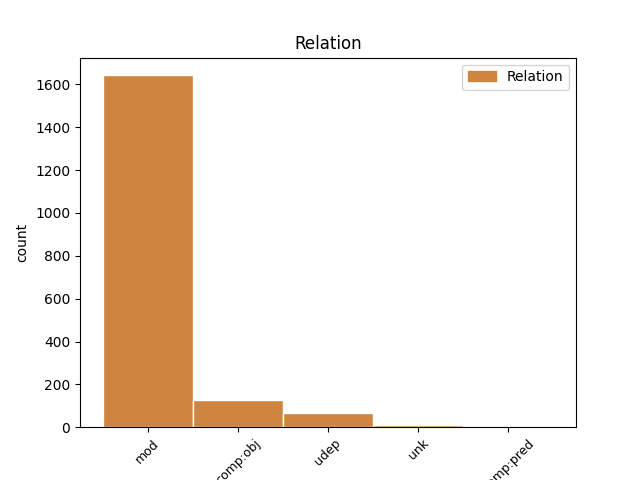
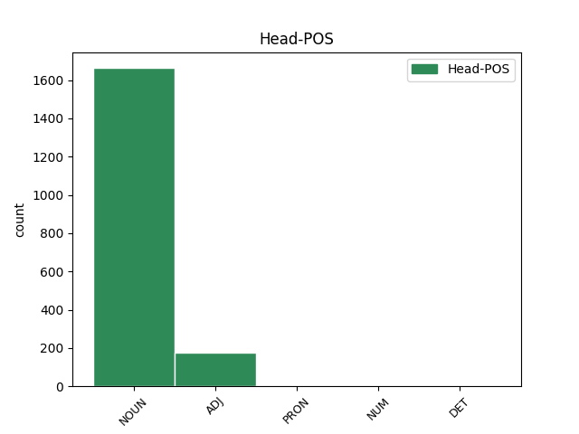
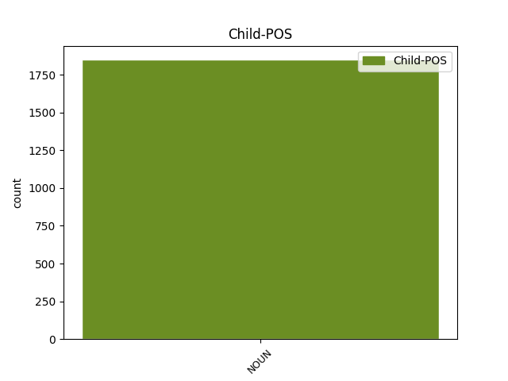

Distribution of features within this leaf



Agreement Rules sorted by frequency.
- When the dependent token is the modifer(mod) of the head token, and the head token is NOUN and the dependent token is NOUN.
1 V _ _ _ _ 0 _ _ _
2 den _ _ _ _ 0 _ _ _
3 pětašedesátých _ _ _ _ 0 _ _ _
4 narozenin _ _ _ _ 0 _ _ _
5 se _ _ _ _ 0 _ _ _
6 stáhl _ _ _ _ 0 _ _ _
7 z _ _ _ _ 0 _ _ _
8 každodenního _ _ _ _ 0 _ _ _
9 provozu provoz NOUN NNIS2-----A---- Animacy=Inan|Case=Gen|Gender=Masc|Number=Sing|Polarity=Pos 0 _ _ _
10 firmy firma NOUN NNFS2-----A---- Case=Gen|Gender=Fem|Number=Sing|Polarity=Pos 9 mod _ _
11 a _ _ _ _ 0 _ _ _
12 při _ _ _ _ 0 _ _ _
13 důstojné _ _ _ _ 0 _ _ _
14 oslavě _ _ _ _ 0 _ _ _
15 symbolicky _ _ _ _ 0 _ _ _
16 předal _ _ _ _ 0 _ _ _
17 svému _ _ _ _ 0 _ _ _
18 synovi _ _ _ _ 0 _ _ _
19 klíč _ _ _ _ 0 _ _ _
20 k _ _ _ _ 0 _ _ _
21 vedení _ _ _ _ 0 _ _ _
22 podniku _ _ _ _ 0 _ _ _
23 . _ _ _ _ 0 _ _ _
1 Po _ _ _ _ 0 _ _ _
2 cestách _ _ _ _ 0 _ _ _
3 plných plný ADJ AANP2----1A---- Case=Gen|Degree=Pos|Gender=Neut|Number=Plur|Polarity=Pos 0 _ _ _
4 nebezpečí nebezpečí NOUN NNNP2-----A---- Case=Gen|Gender=Neut|Number=Plur|Polarity=Pos 3 comp:obj _ _
5 došel _ _ _ _ 0 _ _ _
6 jedné _ _ _ _ 0 _ _ _
7 noci _ _ _ _ 0 _ _ _
8 k _ _ _ _ 0 _ _ _
9 domu _ _ _ _ 0 _ _ _
10 a _ _ _ _ 0 _ _ _
11 zaklepal _ _ _ _ 0 _ _ _
12 na _ _ _ _ 0 _ _ _
13 dveře _ _ _ _ 0 _ _ _
14 . _ _ _ _ 0 _ _ _
1 " _ _ _ _ 0 _ _ _
2 Vy ty PRON PP-P1--2------- Case=Nom|Number=Plur|Person=2|PronType=Prs 0 _ _ _
3 lidé člověk NOUN NNMP1-----A---1 Animacy=Anim|Case=Nom|Gender=Masc|Number=Plur|Polarity=Pos 2 mod _ _
4 nás _ _ _ _ 0 _ _ _
5 vidíte _ _ _ _ 0 _ _ _
6 , _ _ _ _ 0 _ _ _
7 jenom _ _ _ _ 0 _ _ _
8 když _ _ _ _ 0 _ _ _
9 je _ _ _ _ 0 _ _ _
10 kolem _ _ _ _ 0 _ _ _
11 vás _ _ _ _ 0 _ _ _
12 tma _ _ _ _ 0 _ _ _
13 . _ _ _ _ 0 _ _ _
1 taková _ _ _ _ 0 _ _ _
2 věta věta NOUN NNFS1-----A---- Case=Nom|Gender=Fem|Number=Sing|Polarity=Pos 7 unk _ SpaceAfter=No
3 , _ _ _ _ 0 _ _ _
4 to _ _ _ _ 0 _ _ _
5 byl _ _ _ _ 0 _ _ _
6 nečekaný _ _ _ _ 0 _ _ _
7 dar dar NOUN NNIS1-----A---- Animacy=Inan|Case=Nom|Gender=Masc|Number=Sing|Polarity=Pos 0 _ _ _
8 . _ _ _ _ 0 _ _ _
1 " _ _ _ _ 0 _ _ _
2 To _ _ _ _ 0 _ _ _
3 jsme _ _ _ _ 0 _ _ _
4 zase _ _ _ _ 0 _ _ _
5 hráli _ _ _ _ 0 _ _ _
6 , _ _ _ _ 0 _ _ _
7 že _ _ _ _ 0 _ _ _
8 jo _ _ _ _ 0 _ _ _
9 ! _ _ _ _ 0 _ _ _
10 " _ _ _ _ 0 _ _ _
11 nadhodil _ _ _ _ 0 _ _ _
12 stařík _ _ _ _ 0 _ _ _
13 s _ _ _ _ 0 _ _ _
14 ulomenou _ _ _ _ 0 _ _ _
15 nožičkou _ _ _ _ 0 _ _ _
16 brýlí _ _ _ _ 0 _ _ _
17 , _ _ _ _ 0 _ _ _
18 přelepenou přelepený ADJ AAFS7----1A---- Case=Ins|Degree=Pos|Gender=Fem|Number=Sing|Polarity=Pos 0 _ _ _
19 za _ _ _ _ 0 _ _ _
20 uchem _ _ _ _ 0 _ _ _
21 černou _ _ _ _ 0 _ _ _
22 izolační _ _ _ _ 0 _ _ _
23 páskou páska NOUN NNFS7-----A---- Case=Ins|Gender=Fem|Number=Sing|Polarity=Pos 18 udep _ SpaceAfter=No
24 . _ _ _ _ 0 _ _ _
1 Řekl _ _ _ _ 0 _ _ _
2 bych _ _ _ _ 0 _ _ _
3 , _ _ _ _ 0 _ _ _
4 že _ _ _ _ 0 _ _ _
5 devět _ _ _ _ 0 _ _ _
6 desetin desetina NUM CyFP2---------- Case=Gen|Gender=Fem|Number=Plur|NumType=Frac 0 _ _ _
7 našich _ _ _ _ 0 _ _ _
8 potíží potíž NOUN NNFP2-----A---- Case=Gen|Gender=Fem|Number=Plur|Polarity=Pos 6 mod _ _
9 je _ _ _ _ 0 _ _ _
10 z _ _ _ _ 0 _ _ _
11 toho _ _ _ _ 0 _ _ _
12 , _ _ _ _ 0 _ _ _
13 že _ _ _ _ 0 _ _ _
14 i _ _ _ _ 0 _ _ _
15 když _ _ _ _ 0 _ _ _
16 to _ _ _ _ 0 _ _ _
17 víme _ _ _ _ 0 _ _ _
18 , _ _ _ _ 0 _ _ _
19 neděláme _ _ _ _ 0 _ _ _
20 to _ _ _ _ 0 _ _ _
21 . _ _ _ _ 0 _ _ _
Disagree Examples:
1 Tenhle _ _ _ _ 0 _ _ _
2 náramek _ _ _ _ 0 _ _ _
3 měl _ _ _ _ 0 _ _ _
4 cenu cena NOUN NNFS4-----A---- Case=Acc|Gender=Fem|Number=Sing|Polarity=Pos 0 _ _ _
5 luxusního _ _ _ _ 0 _ _ _
6 auta auto NOUN NNNS2-----A---- Case=Gen|Gender=Neut|Number=Sing|Polarity=Pos 4 mod _ SpaceAfter=No
7 , _ _ _ _ 0 _ _ _
8 jenže _ _ _ _ 0 _ _ _
9 jeho _ _ _ _ 0 _ _ _
10 krása _ _ _ _ 0 _ _ _
11 byla _ _ _ _ 0 _ _ _
12 ještě _ _ _ _ 0 _ _ _
13 větší _ _ _ _ 0 _ _ _
14 , _ _ _ _ 0 _ _ _
15 byl _ _ _ _ 0 _ _ _
16 to _ _ _ _ 0 _ _ _
17 jeden _ _ _ _ 0 _ _ _
18 z _ _ _ _ 0 _ _ _
19 těch _ _ _ _ 0 _ _ _
20 předmětů _ _ _ _ 0 _ _ _
21 , _ _ _ _ 0 _ _ _
22 na _ _ _ _ 0 _ _ _
23 které _ _ _ _ 0 _ _ _
24 člověk _ _ _ _ 0 _ _ _
25 pohlédne _ _ _ _ 0 _ _ _
26 a _ _ _ _ 0 _ _ _
27 vzdává _ _ _ _ 0 _ _ _
28 chválu _ _ _ _ 0 _ _ _
29 Stvořiteli _ _ _ _ 0 _ _ _
30 , _ _ _ _ 0 _ _ _
31 který _ _ _ _ 0 _ _ _
32 dal _ _ _ _ 0 _ _ _
33 lidem _ _ _ _ 0 _ _ _
34 takové _ _ _ _ 0 _ _ _
35 nadání _ _ _ _ 0 _ _ _
36 . _ _ _ _ 0 _ _ _
1 Co _ _ _ _ 0 _ _ _
2 by _ _ _ _ 0 _ _ _
3 se _ _ _ _ 0 _ _ _
4 asi _ _ _ _ 0 _ _ _
5 se _ _ _ _ 0 _ _ _
6 světem _ _ _ _ 0 _ _ _
7 stalo _ _ _ _ 0 _ _ _
8 , _ _ _ _ 0 _ _ _
9 když _ _ _ _ 0 _ _ _
10 by _ _ _ _ 0 _ _ _
11 rodiče _ _ _ _ 0 _ _ _
12 mluvili _ _ _ _ 0 _ _ _
13 s _ _ _ _ 0 _ _ _
14 dětmi _ _ _ _ 0 _ _ _
15 stejně _ _ _ _ 0 _ _ _
16 jako _ _ _ _ 0 _ _ _
17 prateta _ _ _ _ 0 _ _ _
18 s _ _ _ _ 0 _ _ _
19 květinou _ _ _ _ 0 _ _ _
20 , _ _ _ _ 0 _ _ _
21 když _ _ _ _ 0 _ _ _
22 by _ _ _ _ 0 _ _ _
23 blízký _ _ _ _ 0 _ _ _
24 pro _ _ _ _ 0 _ _ _
25 blízkého _ _ _ _ 0 _ _ _
26 měl _ _ _ _ 0 _ _ _
27 vždy _ _ _ _ 0 _ _ _
28 aspoň _ _ _ _ 0 _ _ _
29 díl díl NOUN NNIS4-----A---- Animacy=Inan|Case=Acc|Gender=Masc|Number=Sing|Polarity=Pos 0 _ _ _
30 pratetiny _ _ _ _ 0 _ _ _
31 laskavé _ _ _ _ 0 _ _ _
32 pozornosti pozornost NOUN NNFS2-----A---- Case=Gen|Gender=Fem|Number=Sing|Polarity=Pos 29 mod _ SpaceAfter=No
33 . _ _ _ _ 0 _ _ _
1 Slova slovo NOUN NNNP1-----A---- Case=Nom|Gender=Neut|Number=Plur|Polarity=Pos 0 _ _ _
2 lásky láska NOUN NNFS2-----A---- Case=Gen|Gender=Fem|Number=Sing|Polarity=Pos 1 mod _ _
3 jsou _ _ _ _ 0 _ _ _
4 neviditelnou _ _ _ _ 0 _ _ _
5 a _ _ _ _ 0 _ _ _
6 přesto _ _ _ _ 0 _ _ _
7 zázračnou _ _ _ _ 0 _ _ _
8 zálivkou _ _ _ _ 0 _ _ _
9 - _ _ _ _ 0 _ _ _
10 pro _ _ _ _ 0 _ _ _
11 duše _ _ _ _ 0 _ _ _
12 květin _ _ _ _ 0 _ _ _
13 i _ _ _ _ 0 _ _ _
14 pro _ _ _ _ 0 _ _ _
15 duše _ _ _ _ 0 _ _ _
16 lidí _ _ _ _ 0 _ _ _
17 . _ _ _ _ 0 _ _ _
1 Slova _ _ _ _ 0 _ _ _
2 lásky _ _ _ _ 0 _ _ _
3 jsou _ _ _ _ 0 _ _ _
4 neviditelnou _ _ _ _ 0 _ _ _
5 a _ _ _ _ 0 _ _ _
6 přesto _ _ _ _ 0 _ _ _
7 zázračnou _ _ _ _ 0 _ _ _
8 zálivkou _ _ _ _ 0 _ _ _
9 - _ _ _ _ 0 _ _ _
10 pro _ _ _ _ 0 _ _ _
11 duše duše NOUN NNFP4-----A---- Case=Acc|Gender=Fem|Number=Plur|Polarity=Pos 0 _ _ _
12 květin květina NOUN NNFP2-----A---- Case=Gen|Gender=Fem|Number=Plur|Polarity=Pos 11 mod _ _
13 i _ _ _ _ 0 _ _ _
14 pro _ _ _ _ 0 _ _ _
15 duše _ _ _ _ 0 _ _ _
16 lidí _ _ _ _ 0 _ _ _
17 . _ _ _ _ 0 _ _ _
1 Slova _ _ _ _ 0 _ _ _
2 lásky _ _ _ _ 0 _ _ _
3 jsou _ _ _ _ 0 _ _ _
4 neviditelnou _ _ _ _ 0 _ _ _
5 a _ _ _ _ 0 _ _ _
6 přesto _ _ _ _ 0 _ _ _
7 zázračnou _ _ _ _ 0 _ _ _
8 zálivkou _ _ _ _ 0 _ _ _
9 - _ _ _ _ 0 _ _ _
10 pro _ _ _ _ 0 _ _ _
11 duše _ _ _ _ 0 _ _ _
12 květin _ _ _ _ 0 _ _ _
13 i _ _ _ _ 0 _ _ _
14 pro _ _ _ _ 0 _ _ _
15 duše duše NOUN NNFP4-----A---- Case=Acc|Gender=Fem|Number=Plur|Polarity=Pos 0 _ _ _
16 lidí člověk NOUN NNMP2-----A---- Animacy=Anim|Case=Gen|Gender=Masc|Number=Plur|Polarity=Pos 15 mod _ SpaceAfter=No
17 . _ _ _ _ 0 _ _ _